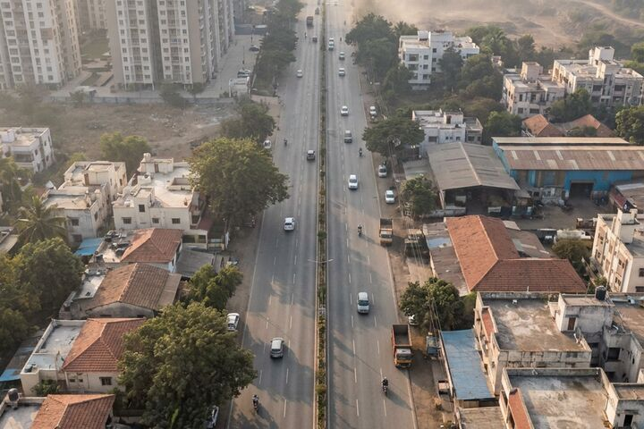

Major changes: Pune revised draft Development Plan proposes narrowing 50 roads and Undri highway
Under the revised plan, which is now awaiting final approval, four 36-metre roads would become 24 metres wide and the state highway through Undri 45 metres.

IllustrationMajor changes in Pune's revised draft Development Plan: roads originally planned at 36 metres have been reduced to as little as 24 metres. The plan proposes narrowing 50 roads in eight merged village areas and the Undri highway.
The proposed width of the state highway passing through Undri has been reduced from 60 metres to 45 metres. Several 12-metre roads have been narrowed to nine metres.
The affected areas are Lohegaon (12 roads), Mundhwa (Keshav Nagar, 7), Hadapsar (Sadesatranali, 5), Undri (6), Ambegaon Budruk (4), Ambegaon Khurd (1), Dhayari (6) and Shivane-Uttamnagar (9).
The breakdown: four 36-metre roads reduced to 24 metres; two 30-metre roads to 24 or 15 metres; 20 roads of 24 metres to 18, 15 or 12 metres; 15 roads of 18 metres to 15 or 12 metres; four 15-metre roads to 12 metres; and five 12-metre roads to nine metres.
The authorities have cited provisions in the regional development plan, existing structures, approved layouts, land acquisition status, natural drainage channels and canal boundaries. Land released from the road alignments will be added to adjoining residential zones, reserved plots or other land-use categories.
The changes have raised concerns about long-term connectivity and traffic movement in these fast-growing areas, where unauthorised construction has already left little scope to widen several internal roads.
The road-width changes are set out in a notification published in the state government's official gazette under Section 28(4).
The plan covers the nine villages merged into the Pune Municipal Corporation in 2017. A committee appointed by the state government heard public objections and suggestions and submitted its report; the revised plan is now awaiting final approval.
Seen a mistake? Tell us